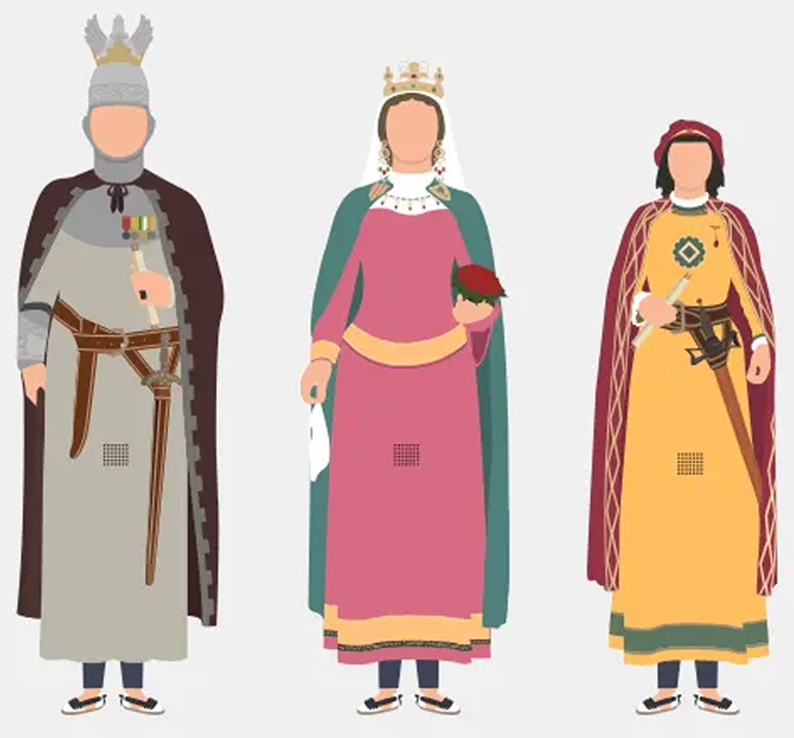

La Diada
El cor de la Festa Major
Mataró vibra amb força.

El cor de la Festa Major
Mataró vibra amb força.
La Diada és el dia gran de Les Santes, l'apoteosi festiva on la ciutat es bolca al carrer. Des del matí fins a la matinada, Mataró es vesteix de gresca, foc i devoció. És la jornada que concentra els actes més emblemàtics: la cercavila de lluïment, el correfoc més electritzant i la multitudinària ballada de sardanes a la plaça de Santa Anna. Un tret diferencial de germanor i identitat.
Esperit de colles, diables i gegants — La Diada honra la cultura popular catalana amb un programa farcit de simbolisme, emoció i ritme.
Despertada amb tabal i gralladors pels carrers del centre.
Totes les comparses, dracs i aigues en cercavila espectacular.
Els diables prenen el carrer amb ritme de tambors i foc a la nit.
Música i animació fins a matinada.
Cercavila de tabalers i gralleres pels carrers del Casc Antic
Plaça de l'Ajuntament · xocolatada popular per a la mainada
Actuació de les passes del passeig de Les Santes. Totes les colles i figures festives.
Actuació de les colles castellaneres de la ciutat · Plaça de toros
Els diables de Mataró i les bèsties de foc recorren la Riera
Ambient musical al Parc Central i a les places fins a la matinada
